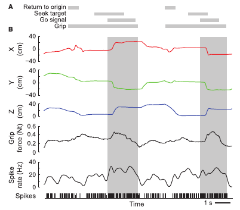
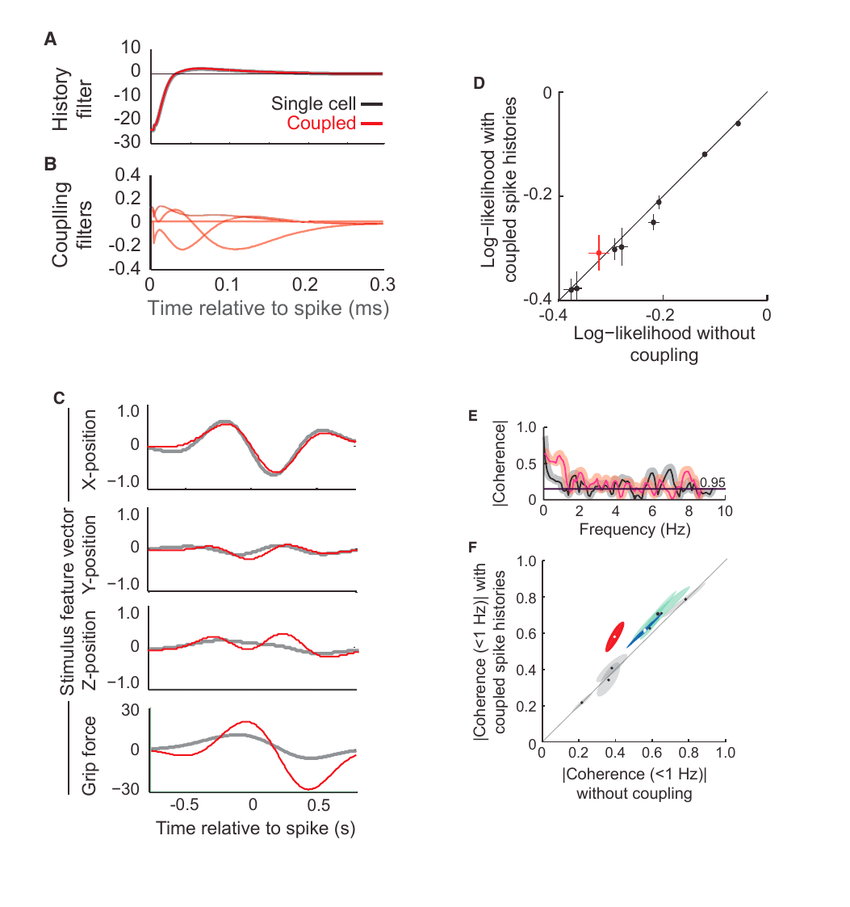

Moving models of motor control forward, in theory and application
Ben Lansdell
University of Washington - Applied Mathematics
Flatiron Institute, March 24th 2017

Linear non-linear Poisson models

Adapted from Aljadeff, Lansdell, Fairhall, Kleinfeld Neuron 2016
In discrete time bins, $\mathbf{t}=(0, h, 2h, \dots, T)$, let $y_i$ be number of spikes $\in(t_{i-1}, t_i]$: $$\begin{align*}y_t &\sim \text{Poisson}(\lambda_t),\\ \lambda_t &= f[\mathbf{x}_t, y_t] = f\left(\mu + \sum_i k_i x_{t-i} + \alpha_i y_{t-i}\right)\end{align*}$$
Encoding models and motor cortex

- Motor cortical neuron representations are complex
- Understanding motor encoding can inform design of BCIs for restoring function to paralyzed limbs, or for control of prosthetic limbs
- Optimal BCI performance likely a mix of decoder choice and user adaptation processes
Encoding models and motor cortex
Grip and reach task
Aljadeff et al 2016
Encoding models and motor cortex
Latent variable models
- Shortcomings of direct connectivity models (Macke et al 2011)

Intracortical arrays provide state-of-the-art BCI control


- Monkeys can be trained to volitionally control individual neurons through feedback and conditioning [Fetz 1969]
- Neurons chosen independently of natural movement association [Moritz and Fetz 2011]
- Conversely, other studies report brain-control mappings which utilize activity observed during the natural motor repertoire are most effective [Sadtler et al 2014]
Dual-control BCIs

- Allow stroke patients to regain functionality through co-opting healthy motor cortex to control neural prosthetic in conjunction with residual movement
Dual-control BCIs

Milovanovic et al 2015
- Do neurons strongly associated with contralateral motion make poor control units due to the potential interference imposed by concurrent hand movement?
Dual-control BCIs

Milovanovic et al 2015
- Previous studies show performance independent of unit tuning [Milovanovic et al 2015]
Dual-control BCIs
Activity of control and non-control units
- BCIs induce widespread changes in activity and tuning in variety of tasks and task perturbations [e.g. Carmena et al 2003]
- Some studies show control unit specific changes in tuning [e.g. Law et al 2014]
How do these effects manifest in a BCI paradigm where control units may be constrained by their role in ongoing movement?
Experiment

- Utah multi-electrode array implanted in hand/wrist area of primary motor cortex of Macaque monkey
- Chet Moritz, Ivana Milovanovic, Cooper Mellama, Adrienne Fairhall (UW)
Random target pursuit task
- Target appears randomly outside radius from cursor position
- Acquire target within fixed time, hold for 1s

For a fixed network of units, compute transfer entropy between units in each condition:
$$
H_{X\to Y} = I(Y_t|Y_{t-1}, \dots, Y_{t-T}) - I(Y_t|Y_{t-1}, \dots, Y_{t-T},X_{t-1}, \dots, X_{t-T})
$$
for Shannon entropy $I$.
Study differences in connectivity between brain-, dual- conditions and manual condition.


Changes in functional connectivity of population
- Brain-control: overall decrease in functional connectivity to control units
- Dual-control: functional connectivity between co-tuned units does not change, except when control unit involved
Intrinsic variability predicts performance
Inspired by Sadtler et al 2014

Intrinsic variability predicts performance
- GPFA used to identify low-dimensional subspace
- Identify when spaces are significantly non-orthogonal

Intrinsic variability predicts performance

- High performance requires at least one unit with high intrinsic variance
Summary
- Tuning and connectivity analysis suggest dual-control task generates cortical activity more similar to that observed in manual control task
- Intrinsic variance of control units only variable found to predict performance and control unit contributions — motor unit tuning does not constrain how the task is performed
$\Rightarrow$ As observed with other BCIs: provided basic neuronal constraints imposed by existing circuitry are taken into consideration, BCI design is able to leverage motor cortical adaptability.
Whole-animal imaging in unconstrained Hydra
https://www.youtube.com/watch?v=dl_oVns2oa8
Why?
- Small (0.5mm-1.5cm) — can fit into field of view of traditional microscope
- Translucent; nerve net, easier imaging
- Does not age, and can regenerate
Hydra anatomy

Adapted from Technau and Steele 2011
Aims
Understand (and control) neuronal basis of simple behavior such as contracting/elongating and expelling fluid (egestion)
Sub-aims:
- Track Hydra pose
- Register and track neurons
- Record neural activity
Experiment


C. Dupre, Yuste lab
Methods
- Create Act-GCaMP6s transgenic Hydra
- Mount between coverslips separated by .1mm spacer
- Image calcium transients
Whole-body calcium imaging in Hydra
C. Dupre, Yuste lab
Deformable object tracking
Extended Kalman filter tracking
$$\begin{align}y_t &= h(x_t) +\nu_t \\
x_t &= f(x_{t-1}) +\epsilon_t\end{align} $$
Where $x_t$ is the Hydra positions and velocities, $y_t$ is the generated
image, $f(\cdot)$ is mass-spring dynamics, $h(\cdot)$ observation.
- High-dimensional — slow, even if using OpenGL/CUDA
- Unstable — once tracking lost, difficult to recover
Multi-frame optic flow image registration

Multi-frame optic flow image registration
- Dense optic flow with subspace constraints (MFSF)
- For each pixel find linear combination of basis paths, $L$, that minimize energy

- $I_f$ = image at frame $f$,
- $I_0$ = reference frame (need not be first frame of video),
- $Q_f^u$, $Q_f^v$ = basis paths at frame $f$,
- $\alpha$ = smoothness regularizer
Tracking with optic flow
- blue = hand tracked neurons
- green = w/in 6px of 'true', red = >6px of 'true'
Tracking with optic flow: performance
Comparison to hand annotated neuron tracks
Per frame:
- at least 52% neurons are tracked within 6px
- on average 82% neurons tracked within 6px
- 42% neurons tracked within 6 px throughout all video
Registering in longer sequences

Choosing which paths to associate
Measure image registration error

Exploiting periodicity in Hydra behavior
Stereotyped Hydra behavior:
elongate then contract
Compute and measure optic flow error, $f_{ij}(x)$, between frames with regular spacing
'iframes' — every 250 frames
 Frame index
Frame index
Exploiting periodicity in Hydra behavior
Two clusters: contracted and elongated
$\Rightarrow$ By registering regions of each iframe with a ref. frame we extend paths into temporally distant but positionally related frames
$\Rightarrow$ A mechanism to handle arbitrarily long videos without accumulation of tracking error


Segmenting regions to register with each reference frame
For $K$ reference frames and $L$ iframes, let $f_{ij}(x)$ represent the optic flow error in using reference image $i$ to construct image $j$.
Use total variation image segmentation:
$$\begin{align*}\min_{u_{kl}}\frac{1}{2}\sum_{k=1}^K\sum_{l=1}^L \int_\Omega |\nabla u_{kl}|\,dx
+ \frac{\lambda}{2}\sum_{k=1}^K\sum_{l=1}^L \int_{\Omega} u_{kl}(x)f_{kl}(x)\,dx\end{align*}
$$
Solve with Chambolle algorithm, implemented on GPU.
Want number of ref frames to balance global registration vs registration error
$\Rightarrow$ Add a group LASSO penalty for number of reference frames used:
$$\begin{align*}\min_{u_{kl}}\frac{1}{2}\sum_{k=1}^K\sum_{l=1}^L \int_\Omega |\nabla u_{kl}|\,dx
+ \frac{\lambda}{2}\sum_{k=1}^K\sum_{l=1}^L \int_{\Omega} u_{kl}(x)f_{kl}(x)\,dx+ \frac{\lambda_2}{2}\sum_{k=1}^K\left(\sum_{l=1}^L \|u_{kl}\|^2_2 \right)^{1/2}\end{align*}
$$
Proposed method
1. Select very sparse set of reference frames (ref frames)
2. Select regular set of inter-frames (iframes)


3. Use optic flow+image segmentation to label regions mapping to reference frames

Proposed method
4. Within each iframe block run MFSF for dense registration

Proposed method
5. Associate each path from (4) with point in a ref frame using optic flow+segmentation (3)

Thus every tracked path is associated with a point in a reference frame
Extending with $K=2; L = 8$
Summary
- Registration between similar frames -- track Hydra pose throughout extended video sequences. Can be applied to other registration/tracking problems
- Create larger hand annotated datasets for performance evaluation
- Exploit temporal continuity between adjacent blocks to relate reference frames to one another
Models of motor cortical function
- Explicit encoding models of kinetics and kinematics only tell so much
- Internal and latent dynamics reveal additional functionality
— Sydney Brenner
Acknowledgments
- Adrienne Fairhall
- Chet Moritz
- Ivana Milovanovic
- Cooper Mellema
- Eberhard Fetz
- Fairhall lab
- Anatoly Buchin
- Moritz lab
- Charlie Matlack
- Robert Robinson
- Yuste lab
- Rafael Yuste
- Thibault Lagache
- Christophe Dupre
- John Szymanski
Segmenting regions to extend

Segmenting regions to extend
$$\begin{align*}\min_{u_l}\frac{1}{2}\sum_{l=1}^k \int_\Omega |\nabla u_l|\,dx
+ \frac{\lambda}{2}\sum_{l=1}^k \int_{\Omega} u_l(x)f_l(x)\,dx\end{align*}
$$
with $f_l(x) = |g(x)-c_l|^2$. Assume $c_l$ are known and $\mathbf{u}\in U$:
$$
U = \left\{u_l:\sum_l^k u_l(x) = 1, \quad u_l(x) \ge 0, \forall x\in\Omega\right\}
$$
Convex in $\mathbf{u}$
Select color via $v(x) = \text{argmax}_l u_l(x)$
Mumford-Shah image segmentation
Chambolle algorithm solves problems:
$$\min_{x\in X}F(Kx) + G(x)$$
for convex $F(\cdot):Y\to [0,\infty]$ and $G(\cdot):X\to [0,\infty]$,
in primal-dual form:
$$\min_{x\in X}\max_{y\in Y} \langle Kx, y\rangle - F^*(y) + G(x)$$
Algorithm:
- Initialization: $\tau, \sigma > 0, \theta \in [0,1], (x^0,y^0)\in X\times Y$. Set $\bar{x}^0 = x^0$
- Iterate until convergence: ($n\ge 0$) $$\begin{align} y^{n+1} &= \pi_{F^*}(y^n + \sigma K \bar{x}^n; \sigma)\\ x^{n+1} &= \pi_G(x^n - \tau K^* {y}^{n+1}; \tau)\\ \bar{x}^{n+1} &= x^{n+1} +\theta(x^{n+1} - x^n) \end{align}$$
Mumford-Shah image segmentation
With proximal operator
$$
\pi_G(y;\tau) = \text{argmin}_{x}\frac{\|x-y\|_2^2}{2\tau}+G(x)
$$
Primal-dual MS image segmentation:
$$\begin{align}\min_{u=(u_l)_{l=1}^k} \max_{p=(p_l)_{l=1}^k} &\left(\sum_{l=1}^k\langle \nabla u_l, p_l \rangle +\langle u_l, f_l \rangle \right) +\delta_U(u) - \delta_P(p) \end{align}$$
So,
- $K = \nabla$ (first order forward difference)
- $K^* = -\text{div}$ (first order backward difference)
- $F^*(p) = \delta_P(p)$ with $P=\left\{ p\in Y^k:\|p_l\|_\infty \le \frac{1}{2}\right\}$
- $G(u) = \delta_U(u)$
Segmentation of tracked regions
For $K$ reference frames and $L$ iframes, let $f_{ij}(x)$ represent the optic flow error in using reference image $i$ to construct image $j$. $$\begin{align}\min_{u} \max_{p} \sum_{l=1}^L\left(\sum_{k=1}^K\langle \nabla u_{kl}, p_{kl} \rangle +\langle u_{kl}, f_{kl} \rangle \right) +\delta_U(u) - \delta_P(p) \end{align}$$
Choosing ref frames
Want number of ref frames to balance global registration vs registration error
Add a group LASSO penalty for number of reference frames used:
$$\begin{align}\min_{u=(u_l)_{l=1}^k} \max_{p=(p_l)_{l=1}^k} &\left(\sum_{l=1}^k\langle \nabla u_l, p_l \rangle +\langle u_l, f_l \rangle \right) +\delta_U(u) - \delta_P(p) +\frac{\lambda_2}{2}\sum_{k=1}^K\left(\sum_{l=1}^L \|u_{kl}\|^2_2 \right)^{1/2} \end{align}$$
The proximal operator $\pi_G$ now becomes:
$$
\pi_G(y;\tau) = \text{argmin}_{x}\frac{\|x-y\|_2^2}{2\tau}+\frac{\lambda_2}{2}\sum_{k=1}^K\left(\sum_{l=1}^L \|y_{kl}\|^2_2 \right)^{1/2}+\delta_U(y)
$$
Compute $\pi_G$ with ADMM